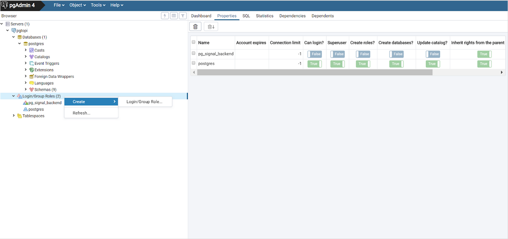

10 Exercise 9: PostgreSQL administration
Contents – Topics relating to PostgreSQL administration.
Goal – After the exercise the trainee knows some basics concepts of PostgreSQL administration.
10.0.1 Preparation
Open pgAdmin in the browser and log in. Open the Query Tool (Right click trainingdatabase -> Query Tool).
10.1 Exercise 9.1: Tablespaces
Check the location of the training database server’s default tablespaces. User information is located in the pg_default tablespace which is in the data_directory’s base folder. General information about the system is located in the pg_global tablespace, which is in the data_directory’s global folder. You can check the location of the data directory with the following command:
SHOW data_directory;10.2 Exercise 9.2: Database roles
By default PostgreSQL has a role called ‘postgres’ and a database by the same name. In the prior exercises we’ve created a database to use in the training (trainingdatabase). You can create a new user in the database server with the following SQL command:
DROP ROLE IF EXISTS matt;
CREATE ROLE
matt
LOGIN PASSWORD
'1234'
CREATEDB
VALID UNTIL
'infinity';The CREATEDB parameter defines the privilege to create databases for the user. The VALID parameter defines how long the role is valid for (in this case indefinitely).
Create a new administrator role with the following SQL command:
DROP ROLE IF EXISTS dba;
CREATE ROLE
dba
LOGIN PASSWORD
'1234'
SUPERUSER
VALID UNTIL
'2027-1-1 00:00';This new role has administrator privileges (SUPERUSER) and is valid until January 1st, 2027 You can inspect the role’s attributes with pgAdmin in the Login/Group Roles section (in the side panel).
10.3 Exercise 9.3: Group roles
Group roles can be created with the following command:
DROP ROLE IF EXISTS admins;
CREATE ROLE
admins
INHERIT;The INHERIT parameter means that every role inside the admins group inherit the privileges of the group. As an exception the SUPERUSER privilege is never inherited in PostgreSQL.
Add the matt and dpa roles to the admins group with this command:
GRANT
admins
TO
matt, dba;You can switch roles with the SET ROLE command:
SET ROLE
matt;You can check the currently used role with this command:
SELECT current_user;Test the SELECT session_user command.
SELECT ...What is the difference between current_user and session_user?
10.4 Exercise 9.4: Adding roles in the GUI

Managing roles is easier in the pgAdmin user interface. Add a new user, choose a password and also add them to the admins group role. Note the SQL statement generated in the SQL tab. Roles can be deleted with the DROP ROLE < role_name > command.
10.5 Exercise 9.5: Creating a new tablespace
To create a new tablespace a folder must be created in the server. The folder must be owned by the postgres user and have permissions only for the postgres user. A folder has already been created to the training database server with the following commands:
Create a new tablespace with the following command either in pgAdmin or psql:
CREATE TABLESPACE tmp_tablespace
LOCATION '/usr/local/tmp_tbls';10.6 Exercise 9.6: Changing the tablespace of a database or a table
You can alter the tablespace of an entire database with a single command.
NOTE! In order to do this the database cannot have any active connections!
- Close the pgAdmin database connection to the trainingdatabase by right clicking the database in the side panel and clicking Disconnect Database.
- Open the postgres database from the side panel and open the Query Tool (you can also do this in psql). Execute the following command:
ALTER DATABASE trainingdatabase
SET TABLESPACE tmp_tablespace;If this doesn’t work and pgAdmin gives an error about active connections, try logging out and back into pgAdmin.
You can check the database’s tablespace with this query:
SELECT
spcname, pg_tablespace_location(oid)
FROM
pg_tablespace;For testing purposes create a temporary table:
DROP TABLE IF EXISTS tmp_table;
CREATE TABLE tmp_table AS
SELECT x
FROM
generate_series(2,5000,2) AS x;You can check which tablespace a table uses with this command:
SELECT
tablename, tablespace
FROM
pg_tables
WHERE
tablename = 'tmp_table';Alter the table’s tablespace with the following command:
ALTER TABLE
tmp_table
SET TABLESPACE
tmp_tablespace;Check that the tablespace of the tmp_table has been changed. You can also use pgAdmin’s GUI to check tablespaces.
10.7 Exercise 9.7: Altering the tablespace of an index
You can create an index for a table with this command:
CREATE INDEX
idx_tmp_x
ON tmp_table(x);Indices are created in the pg_default tablespace by default. Often the indices should be saved to a tablespace which uses the server’s fastest disk (e.g. SSD). You can change an index’s tablespace with the following command:
ALTER INDEX
idx_tmp_x
SET TABLESPACE
tmp_tablespace;